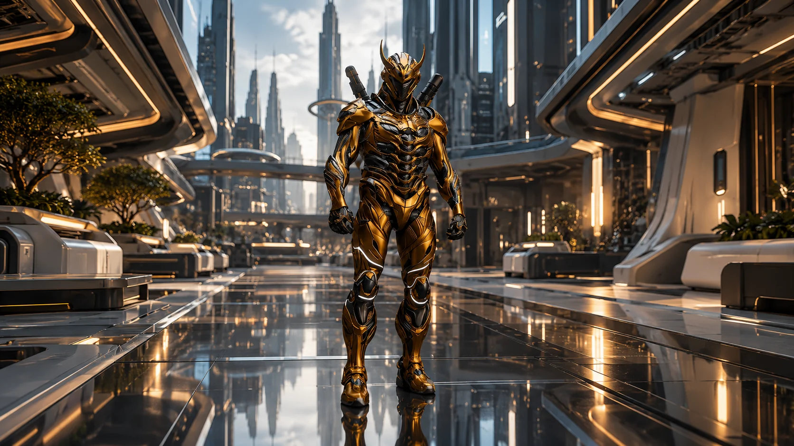

Field Observation
Geris investigates a compact alien node glowing red near the plaza floor. The node indicates covert alien monitoring inside an Earth 1 civic center.
 ©
©
GENEZYS ARCHIVE · Legionnaire
Lattice Patron
Identity & combat record
Archive node 01 / 04
Archive record
Geris tends a crystal lattice the way others tend a garden. The Gem Cage seeds a slow quantum burn into every enemy on the field. The Wardens say a bond-stone grows only for those who are patient with it. Geris's has grown larger than any other.
Combat signature
Seeds a lingering burn of quantum power: Deals 30 damage to all enemies for 2 rounds.
Genezys 05:02 ™&©2026LEGIONS
Field intelligence
Archive node 02 / 04
FIELD REPORT // OBJECT DISCOVERY

Field Observation
Geris investigates a compact alien node glowing red near the plaza floor. The node indicates covert alien monitoring inside an Earth 1 civic center.
Environment
Object Analysis
Key Findings
Restricted visual records
Archive node 03 / 04

Motion archive
Archive node 04 / 04
Motion record not yet recovered